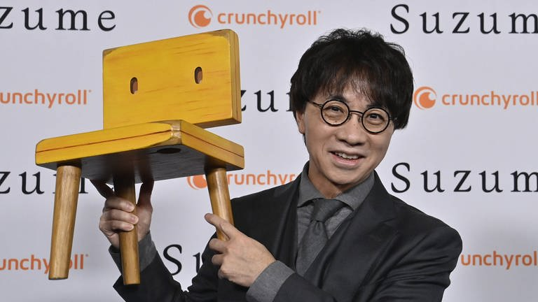

Shinkai Stories

About Makoto Shinkai
Makoto Niitsu, known as Makoto Shinkai, born February 9, 1973, in Koumi Japan, is a screenwriter, storyboard artist, animator, video editor, director, novelist, and manga artist. After graduating from Chuo University, he started his career as an animator with Nihon Falcom in 1996, he worked there for 5 years in that time he made video clips for games and graphic designs, he is known for his anime feature films produced with studio CoMix Wave Films, he was also a member of juvenile literature club and drew picture books, his passion for creation to the manga, anime, and novels came from when he was in middle school, his favorite anime is Castle in the Sky by Hayao Miyazaki.
Career
"I always strive to create something that reflects how I feel about the world at that moment. It's not just about making something entertaining, but about connecting emotionally with the audience."
Makoto Shinkai's career began with his remarkable talent for storytelling and animation. In 1999 he made an (OVA) called She and Her Cat, a five-minute short piece. It won several awards, including the grand prize at the 12th DoGA CG Animation contest (2000). After winning the grand prize, in June 2000 he followed up by drawing Voices of a Distant Star, some time later he was contacted by Manga Zoo, which offered to work with him to turn it into an anime they could sell. In May 2001, he quit his job at Falcom and started to work full-time on Voices. Voices of a Distant Star was a 25-minute film. Later he released The Place Promised in Our Early Days, which was a 90-minute film released nationwide in Japan on November 20, 2004, it won many honors.
His next project was 5 Centimeters per Second which premiered on 3 March 2007. The film is a poiganat anthology of three interconnected stories exporing themes of distanc, love, and unfulfilled connections. It's introspective narrative and stunning visuals made Shinkai's reputation as a master of storytelling. The film won multiple awards, including the Best Animated Feature Film at the Asia Pacific Screen Awards, and its title became a metaphor for slow but inevitable separation. In November 2010, he revealed that his next work would be Children Who Chase Lost Voices from Deep Below. The film was released on May 7, 2011, this film marked a shift in his style, blending his signature emotional depth with a more adventurous and fantasy-driven narrative. Often compared to Studio Ghibli works for its mythical elements, the film explores themes of grief, loss, and moving forward, drawing inspiration from mythologies and underworld motifs. His next feature, The Garden of Words was released on May 31, 2013. This romantic drama explored unconventional relationships and unspoken emotions, set against the backdrop of Tokyo’s lush greenery and rainfall. The film's meticulous attention to detail in animation, particularly in depicting nature and urban landscapes, was widely praised. It also delved into themes of loneliness, self-discovery, and the power of fleeting connections, resonating deeply with audiences.
On August 26, 2016, he released Your name, a body-swapping romantic drama that took the world by storm. The film captivated viewers with its intricate narrative, breathtaking animation, and emotionally charged soundtrack by RADWIMPS. It skillfully blended traditional Japanese folklore with contemporary themes of connection and destiny. The movie received widespread critical acclaim for its imagery, music, emotional weight, and innovative use of postmodernist themes, such as the juxtaposition of urban and rural life, the fluidity of time, and metaphysical connections. The film was praised for its narrative, imagery, animation, music, emotional weight, and skillful use of post-postmodernist Themes. The film became the fifth-highest-grossing film of all time in Japan. By 2019 it became the highest-grossing anime film of all time worldwide, overtaking Miyazaki's Spirited Away. His next project Weathering with You released on July 19, 2019 in Japan. The film is a romantic fantasy drama following the story of a boy and girl who discover the ability to control the weather. It explores themes of love, sacrifice, and the delicate balance between humanity and nature. The film was critically acclaimed for its stunning visuals, emotionally resonant story, and an evocative soundtrack by RADWIMPS, who had previously collaborated with Shinkai on Your Name. The film grossed $192.9 million worldwide making it the tenth highest-grossing Japanese film of all time. Suzume, his seventh feature-length film was released in Japan on November 11, 2022. The movie follows a young girl named Suzume who embarks on a journey to close mysterious doors causing disasters across Japan. Suzume weaves a tale that combines mythological elements with the impact of natural disasters, reflecting on themes of loss, healing, and the interconnectedness of the world. Grossing over $300 million worldwide, making it one of the highest-grossing Japanese films internationally. Suzume became the fourth-highest-grossing anime film of all time globally, further cementing Shinkai’s reputation as a leading figure in modern animation.
| Title | Year | Credited as | |||
|---|---|---|---|---|---|
| Writer | Producer | Actor | Other | ||
| Suzume (すずめの戸締まり Suzume no Tojimari) |
2022 | Yes | Yes | Editing | |
| Weathering with You (天気の子 Tenki no Ko) |
2019 | Yes | Yes | Photography Color design Editing |
|
| Your name, (君の名は。 Kimi no Na wa) |
2016 | Yes | Yes | Photography Color design Editing |
|
| Someone's Gaze (だれかのまなざし Dareka no Manazashi) |
2013 | Yes | Yes | ||
| The Garden of Words (言の葉の庭 Kotonoha no Niwa) |
2013 | Yes | Yes | Photography Color design Editing |
|
| Children Who Chase Lost Voices (星を追う子ども Hoshi o Ou Kodomo) |
2011 | Yes | Yes | Yes | Cinematography Editing |
References
- https://en.wikipedia.org/wiki/Makoto_Shinkai
- https://99designs.com/inspiration/logos/cool
- https://www.youtube.com/watch?v=pfHiwmknAcc
- https://www.youtube.com/watch?v=pX9WnvWT4dk
- https://makotoshinkai.fandom.com/wiki/Makoto_Shinkai
- https://features.japantimes.co.jp/makoto-shinkai-interview/
- https://www.swr.de/swrkultur/film-und-serie/makoto-shinkai-suzume-108.html
- https://www.local10.com/entertainment/2023/04/10/the-anime-hit-suzume-and-shinkais-cinema-of-cataclysm/